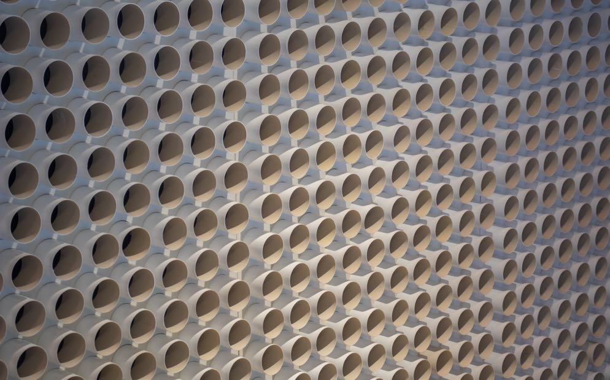
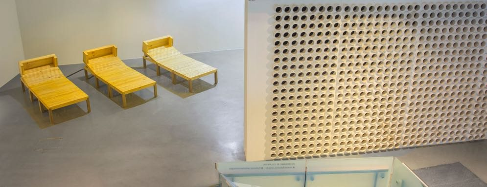
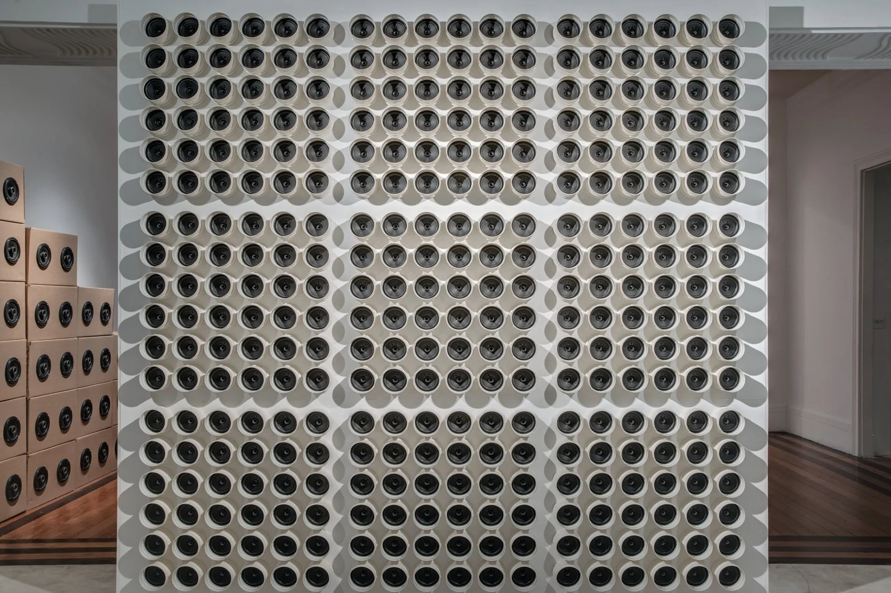
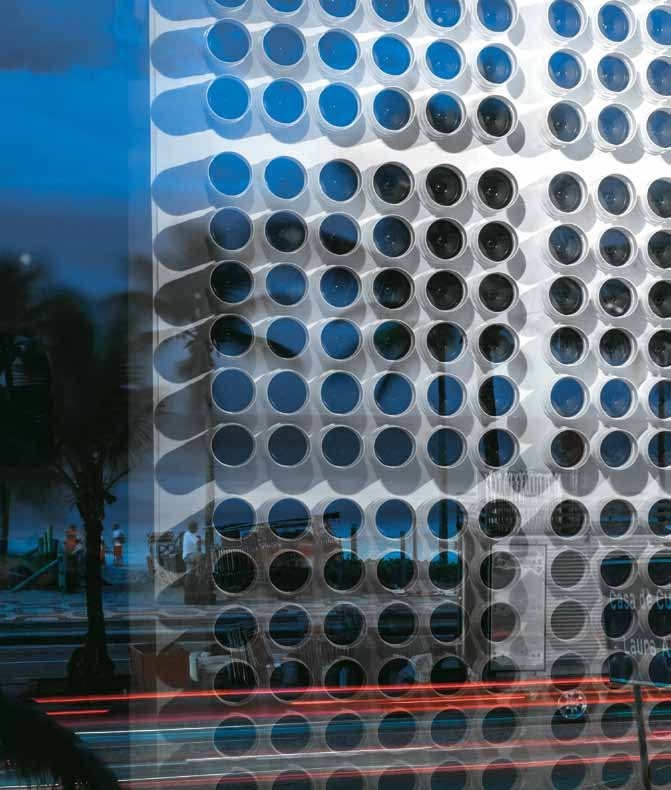

Turbina
Use fones de ouvido
Instalação em forma de parede, com tubos de PVC e madeira pintada, que reproduz gravações do mar. Apresentada na exposição Sonar, Casa de Cultura Laura Alvim (2013), e em A Pele do Mundo, Futuros – Arte e Tecnologia (2023).
- Materiais
- Madeira, tinta acrílica, PVC, áudio do mar
- Dimensões
- 261 × 263 cm (2013); 410 × 285 × 30 cm (2023)
- Local
- Casa de Cultura Laura Alvim (2013); Futuros – Arte e Tecnologia (2023)
- Exposição
- A Pele do Mundo (2023)
- Curadoria
- Michael Asbury
- Coleção
- Coleção Sérgio Carvalho
- Fotos
- Pedro Tressi, Mario Grisolli



